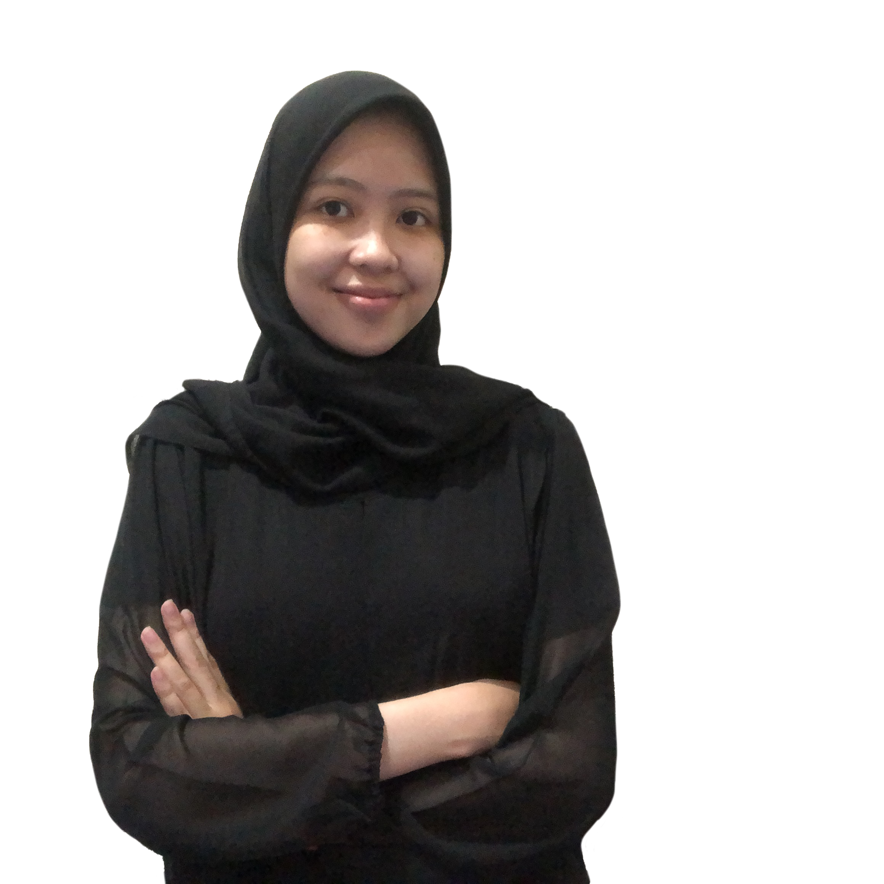

Siapakah kami?
"Kebersamaan adalah permulaan. Menjaga bersama adalah kemajuan. Bekerja bersama adalah keberhasilan."
– Henry Ford
Perkenalkan kami Departemen Dalam Negeri sebagai bagian dari Departemen Bidang Internal HMTC PROGRESIF 2021.
Sebagai bagian dari Departemen Dalam Negeri HMTC, kami menaungi dan berhubungan langsung dengan seluruh anggota HMTC untuk menumbuhkan rasa peduli terhadap sesama sehingga tercipta suasana kekeluargaan dalam HMTC.
Care For Others

KEPENGURUSAN
Departemen Dalam Negeri HMTC PROGRESIF mempunyai dua orang penting yang menjabat sebagai Ketua Departemen dan Sekretaris Departemen.
Ketua
Restu Agung Parama
Sekretaris
Sitti Chofifah
Program Kerja
HMTC ITS, khususnya departemen Dalam Negeri memiliki program kerja yang beragam dan rutin dilaksanakan tiap tahunnya. Penasaran? Yuk lihat bersama.
Syukuran Wisuda
Sebagai bentuk apresiasi kepada mahasiswa departemen Teknik Informatika yang telah menyelesaikan studi. Juga untuk mempererat tali silaturahmi antar seluruh elemen departemen Teknik Informatika.
P1
Syukuran Wisuda
Hari Keakraban
Sebagai wadah saling mengenal antar anggota HMTC dengan memberikan fasilitas berupa hiburan pada saat masa perkuliahan untuk seluruh mahasiswa Departemen Teknik Informatika ITS.
P2
Hari Keakraban
Malam Keakraban
Sebagai wadah untuk mengenalkan dan menyambut mahasiswa baru, angkatan 2021, serta meningkatkan tali silaturahmi dan rasa kekeluargaan antar anggota HMTC.
P3
Malam Keakraban
Apresiasi
Memberikan apresiasi kepada mahasiswa yang berprestasi maupun kepada mahasiswa yang mengharumkan nama baik departemen Teknik Informatika.
P4
Apresiasi
Ulang Tahun
Memberikan informasi mengenai ulang tahun seluruh anggota HMTC. Serta ucapan ulang tahun untuk semua anggota HMTC demi meningkatkan keharmonisan antar anggota HMTC.
P5
Ulang Tahun
Temu Warga
Sebagai wadah untuk berdiskusi antar warga C baik dengan bahasan yang ringan hingga berat untuk menyelesaikan suatu permasalahan serta merekatkan antar warga C.
P6
Temu Warga
TCangkruk
Sebagai wadah untuk bersenang-senang dan bercengkrama agar dapat mengeratkan antar mahasiswa Teknik Informatika.
P7
TCangkruk
Forum Komunikasi Lab
Sebagai wadah berkomunikasi untuk menyelesaikan masalah dan pemberian informasi terkait laboratorium bagi seluruh admin laboratorium di Departemen Teknik Informatika ITS.
P8
Forum Komunikasi Lab
TCare
Sebagai wadah penyaluran bantuan dari mahasiswa Informatika kepada mahasiswa Informatika yang mengalami musibah.